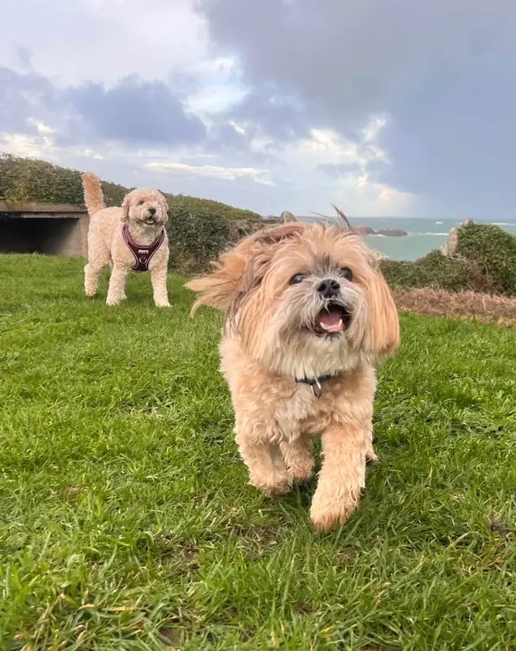
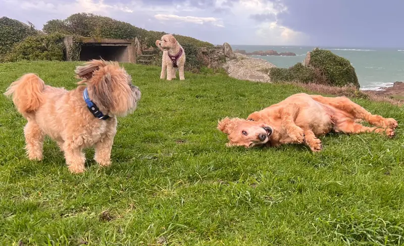
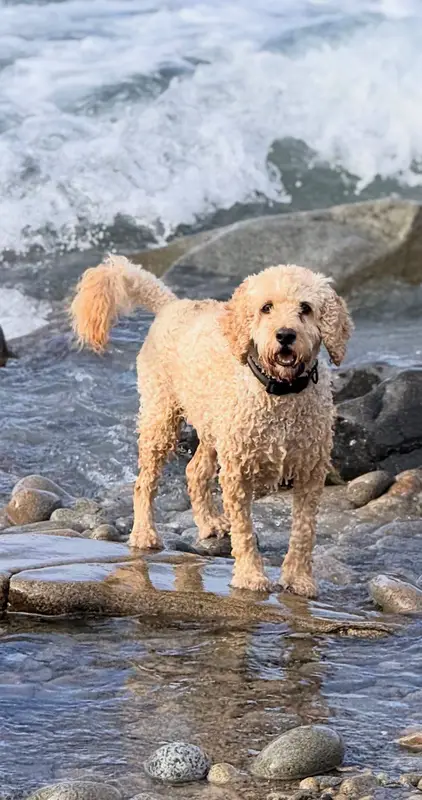

Group dog walks
in the Vale
Your dog goes out with their friends on the fields and coast paths around the Vale, Guernsey, and comes home happy and tired.
Vale, GuernseyWalks in a groupCall or WhatsApp
The walk
How a walk goes
Walks are in a group around the Vale, so your dog gets company as well as exercise. Pick a step to see more.

Step 1 of 4
Out with friends
Your dog heads out with the friends they know, with room to run and play as well as walk.
- Walked alongside other dogs
- Time to run and play
We give your dog the best time with their friends, and bring them home happy and tired.
Every dog on the walk is loved as one of our own.
Ask about a walk
Out and about
A few recent walks. Tap a photo to see it full size.
Contact
Ask about a walk
Call or WhatsApp, or send a message with a bit about your dog and the days you need. We’ll get back to you.
Vale, Guernsey Facebook